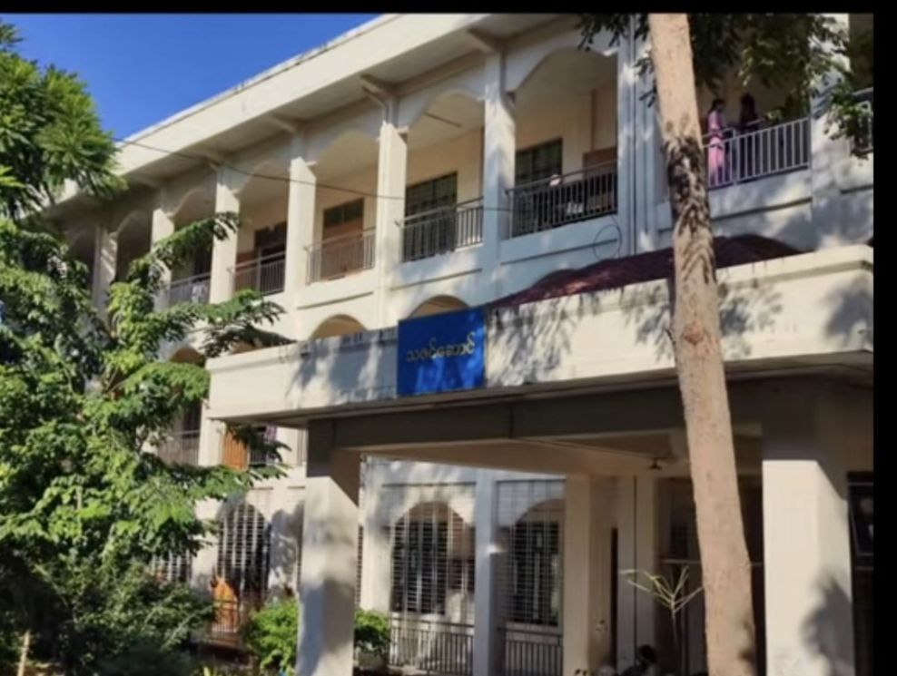
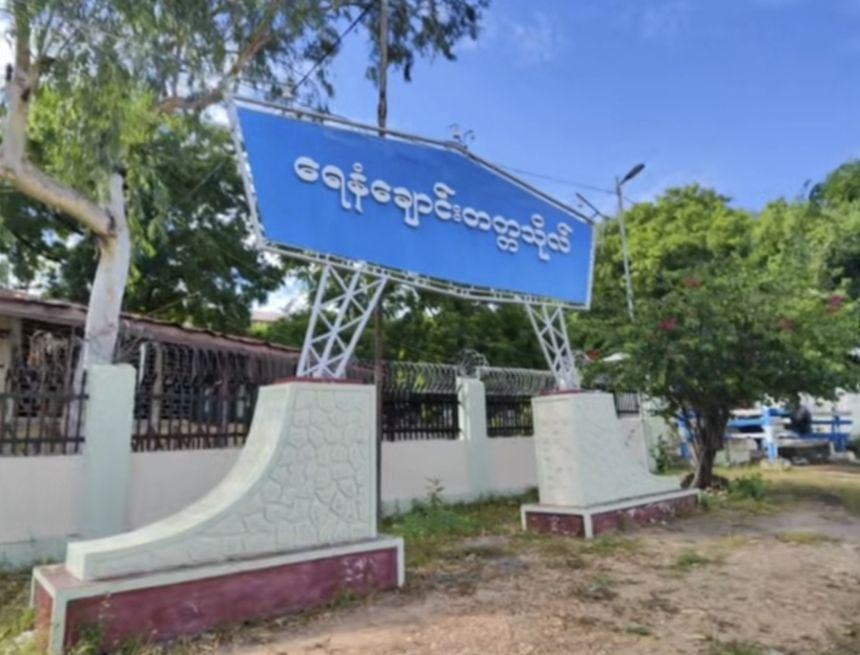
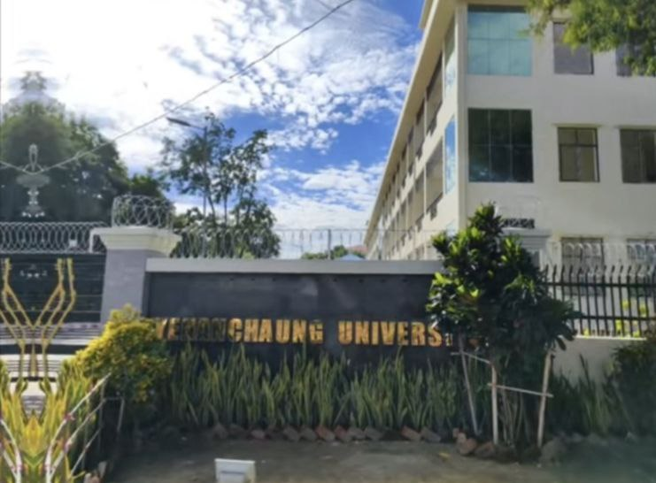
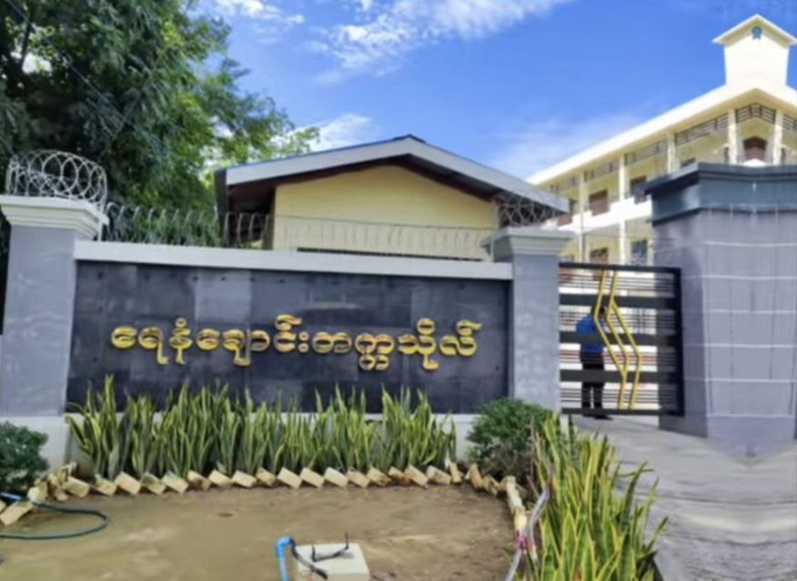
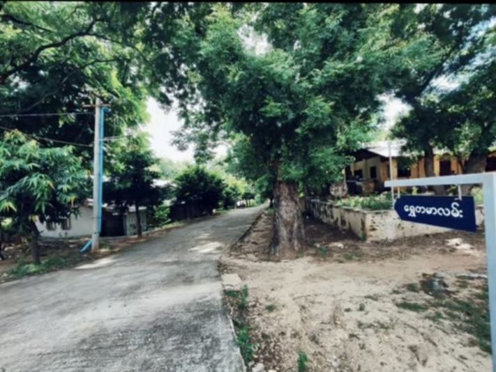
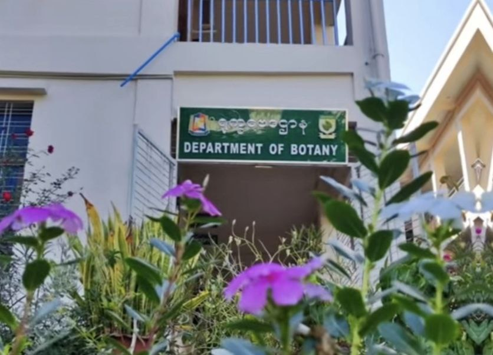
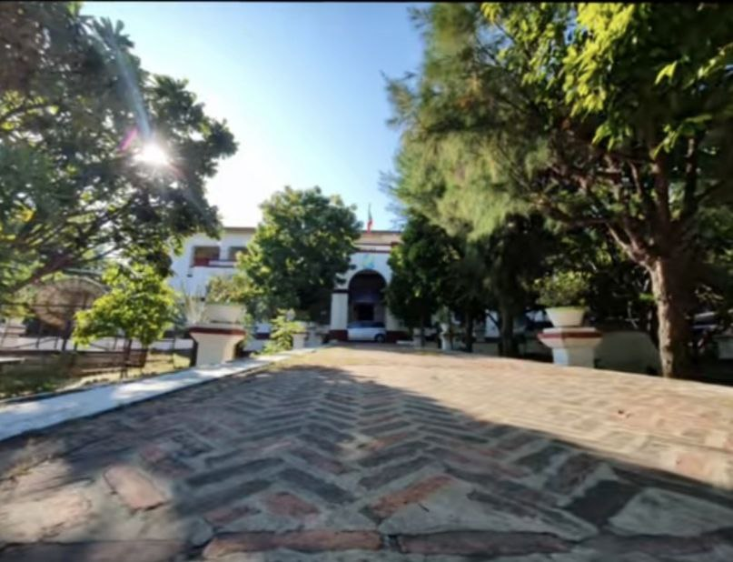
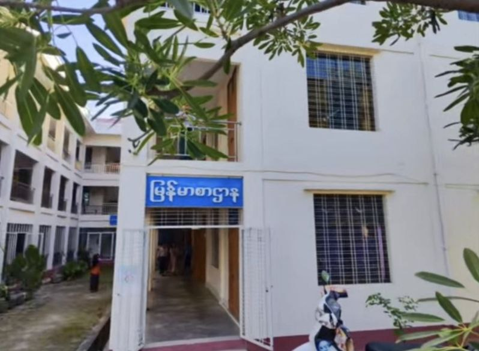

About the University
ရေနံချောင်းတက္ကသိုလ် (အင်္ဂလိပ်: Yenangyaung University) သည် မြန်မာနိုင်ငံ၊ မကွေးတိုင်းဒေသကြီး၊ ရေနံချောင်းမြို့တွင် တည်ရှိသည့် တက္ကသိုလ်တစ်ခု ဖြစ်သည်။[၁] ပညာရေး ဝန်ကြီးဌာန၊ အဆင့်မြင့်ပညာဦးစီးဌာန လက်အောက်တွင် ပါဝင်သည်။
Why Choose Yenangyaung University?
Historic Flagship Campus
Over a century of academic tradition and a central role in Myanmar's higher education system.
Diverse Academic Departments
12 departments in arts, sciences and law offer broad study options and research opportunities.
Modernized Teaching Approach
Focus on student-centred learning to develop critical thinking and independent study skills.
National & Regional Influence
Produces many of Myanmar's leaders, academics and professionals in public and private sectors.
Campus Gallery

🏛️

📚

🏠

🏠

🏠
Academic Programs
Undergraduate programmes in arts and sciences
Arts Programmes
Bachelor of Arts (B.A.)Arts degrees offered through 6 departments including Myanmar, English, Geography, History, Philosophy, and Oriental Studies.
Science Programmes
Bachelor of Science (B.Sc.)Science degrees through 6 departments: Mathematics, Physics, Chemistry, Geology, Zoology, and Botany.
Postgraduate Programmes
Limited MA/MSc AvailableMaster's programmes offered in select departments for high-performing graduates (primarily research-focused).
University Initiatives & Development
Campus growth and student development activities
Campus Development
YenaungChaung University continues to expand its modern campus facilities including academic buildings, laboratories, library and student hostels to accommodate growing student numbers.
12-Department Academic Structure
The university established 6 Arts and 6 Science departments offering BA/BSc programmes, serving students from Magway Region and surrounding areas.
Intra-Department Competitions
Regular inter-department sports, cultural events and academic competitions that build teamwork, leadership and community spirit among students.
Regional Education Access
Providing quality higher education to rural Magway students, developing skilled graduates for government service, teaching and regional development roles.
Student Life at YenaungChaung University
Modern regional campus with hostels and academic facilities

Student Hostels
Separate male and female hostels provide convenient on-campus accommodation, creating a supportive community for students from Magway Region and beyond.

Modern Regional Campus
New academic buildings, laboratories and open spaces designed for effective learning in a growing regional university environment.

Library & Science Labs
Central library plus dedicated science laboratories support coursework, practical experiments and independent study across 12 departments.
Career Opportunities
Pathways after graduating from Yenan Chaung University
Government & Public Service
Many graduates work in government ministries, education, and public administration across Myanmar.
Civil service pay scalesPrivate Sector & NGOs
Arts and science graduates pursue careers in business, NGOs, international organisations and local companies.
Role and sector dependentAcademic & Research Careers
Graduates who complete master's and doctoral degrees can become lecturers, researchers or academic staff.
University and research pay scalesLegal & Professional Fields
LL.B graduates may work as legal officers, advocates or continue advanced legal studies and professional training.
Experience and role basedReady to Study at YenaungChaung University?
Start your higher education journey in Magway Region